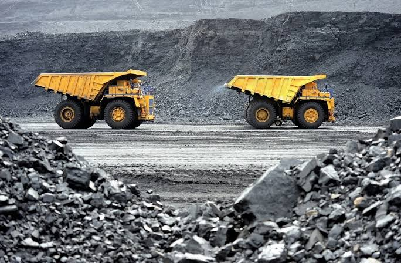
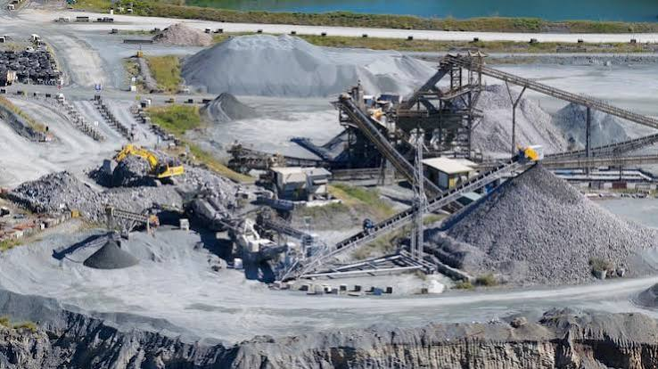

Excavate operates surface and underground mining sites across three continents, delivering ore, aggregate, and industrial minerals with a focus on safety and long-term site stewardship.

Surface and underground extraction using equipment matched to each site's geology and yield profile.
On-site crushing, screening, and beneficiation to bring raw material to market-ready grade.
Land restoration and closure planning built into every site from the first day of operation.
Founded in 1984, Excavate grew from a single quarry into a multi-site operation supplying ore and aggregate to industrial partners worldwide.
Every site follows the same standard: rigorous safety protocol, transparent reporting, and a rehabilitation plan agreed before the first shovel breaks ground.
See our projects
From site engineering to logistics, Excavate is growing its team for 2026 and beyond.
View openings